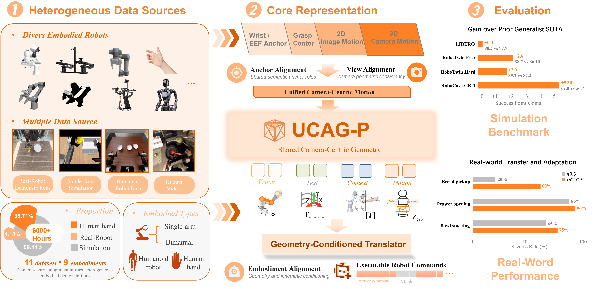
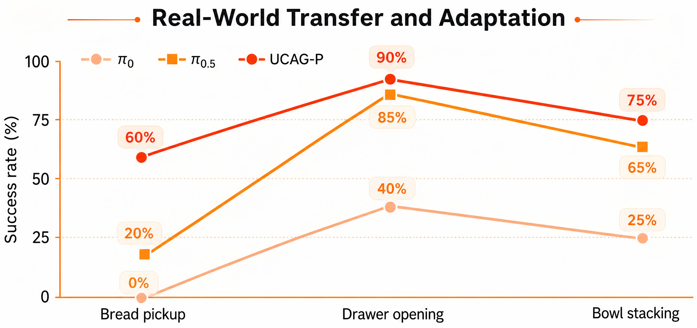

로봇 팔·휴머노이드·사람 손을 서로 다른 "몸(embodiment)"으로 보지 말고, 카메라가 보는 두 개의 앵커 점(손목·그리퍼/파지 중심)의 움직임이라는 공통 좌표로 통일해 사전학습하는 UCAG-P. 사전학습된 카메라 좌표 궤적을 각 로봇 몸에 맞는 실행 명령으로 번역해주는 Geometry-Conditioned Translator를 두어, 모델 하나로 LIBERO 98.3%, RoboTwin Easy/Hard 88.7% / 89.2%, RoboCasa 휴머노이드 GR-1 62.0%을 달성. 특히 LIBERO-Plus 제로샷 강건성 평균 82.0%(LIBERO 데이터로 후학습 전혀 안 함)를 기록.
사전학습된 VLA(Vision-Language-Action, 시각-언어-행동 정책)를 여러 로봇에 통째로 적용하기 어려운 이유는 몸(embodiment)마다 관절 수·좌표계·자유도가 제각각이라는 데 있다. 지금까지의 해결책은 두 부류였다.
저자들은 이 대신 카메라가 관찰 가능한 기하학적 앵커(anchor)만 있으면 사람·로봇·휴머노이드·양팔 모두를 동일한 행동 공간에서 예측할 수 있다는 관점을 취한다. 즉, "무엇을 움직였는가"는 카메라에서 보이는 손목·손끝 위치의 변화로 통일하고, "그것을 어떻게 실행하는가"만 로봇별로 다르게 처리하자는 것.
모든 조작을 왼팔/오른팔(L/R) 각각의 앵커 쌍 (p₀, p₁)의 카메라 좌표 변화로 표현한다.
매 시점 t의 청크 하나(길이 H)에 대해 다음처럼 30차원 벡터를 정의한다.
사람 손 데이터엔 그리퍼 값이 없고, 로봇 데이터엔 카메라 좌표 손 위치가 없을 수 있다. 이때 마스크 mg로 없는 항목은 loss에서 제외해, 하나의 예측 헤드가 이질적인 데이터 모두를 흡수한다.
사전학습으로 얻은 카메라 좌표 궤적 ĝ를 실제 로봇 명령 û로 바꾸는 얇은 모듈. 입력은 다음과 같다.
이들을 조건으로 트랜스포머 φψ가 몸에 맞는 실행 명령 û를 뱉는다: û(k) = φψ(ĝ, s(k), T(k), J(k), z(k)). 상단(공통 궤적 예측)은 몸에 무관하고, 하단(번역)은 몸별 명령을 생성한다.
모두 마스킹된 L1 형태로, "없는 라벨은 loss에서 자동으로 빠지도록" 만든 것이 요점.
| 카테고리 | 시간 | 비율 | 에피소드 | 주요 데이터셋 |
|---|---|---|---|---|
| 실로봇 | 266.3h | 4.18% | 53,769 | DROID, RoboChallenge, RoboCoin |
| 시뮬레이션 | 3,767.5h | 59.11% | 625,771 | LIBERO, RoboTwin, RoboCasa, InternData |
| 사람 손 | 2,339.7h | 36.71% | 341,132 | VITRA, EgoDex, EgoVerse |
| 합계 | 6,373.6h | 100% | 1,020,672 | — |
시뮬이 6할, 사람 영상이 3.7할. 실로봇 데이터가 4%밖에 안 되지만 사전학습으로 상위권을 찍는 게 논점.
| 모델 | 유형 | LIBERO | RoboTwin Easy | RoboTwin Hard | RoboCasa GR-1 |
|---|---|---|---|---|---|
| UCAG-P | Generalist | 98.3 | 88.7 | 89.2 | 62.0 |
| Qwen-VLA-Instruct | Generalist | 97.9 | 86.1 | 87.2 | 56.7 |
| ABot-M0 | Specialist | 98.6 | 86.0 | 85.0 | 58.3 |
UCAG-P는 벤치별 후학습 없이 하나의 체크포인트로 단일팔·양팔·휴머노이드를 모두 커버. Generalist 모델 중 최고, RoboTwin/RoboCasa에서는 벤치 특화 Specialist인 ABot-M0도 앞선다.
| 카테고리 | Camera shift | Robot state | Language | Lighting | Background | Sensor noise | Layout shift | Avg |
|---|---|---|---|---|---|---|---|---|
| UCAG-P (zero-shot) | 51.2 | 92.8 | 83.5 | 98.9 | 98.0 | 75.2 | 74.3 | 82.0 |
LIBERO 데이터로 후학습을 전혀 하지 않은 상태(zero-shot)에서의 강건성. 조명·배경·로봇 상태 흔들림에는 특히 강하고(90%대), 카메라가 흔들리는 경우가 상대적으로 약점(51.2%).
| 태스크 | UCAG-P | π₀.₅ |
|---|---|---|
| Bread grasping (human→robot 전이) | 60 | 20 |
| Drawer opening | 90 | 85 |
| Bowl stacking (bimanual) | 75 | 65 |
특히 사람 시연을 로봇으로 전이하는 Bread grasping에서 π₀.₅ 대비 3배 이상(60% vs 20%). "사람 손 궤적이 로봇에 그대로 옮겨질 수 있는 중간 표적"임을 시사.
ALOHA 로봇에서 학습한 뒤 완전히 다른 팔(ARX)에 직접 이식했을 때 성공률 35.0%. 저자들 표현 그대로 "카메라 중심 궤적이 이식 가능한 중간 표적이 됨을 보이지만, 구조·기구학 격차가 크면 여전히 어려움". 즉, 완벽하진 않지만 실제로 옮겨진다는 증거.


아직 추가 질문이 없습니다. 이 논문에 대해 더 궁금한 점을 물어보시면 답변을 여기에 정리해 추가합니다.